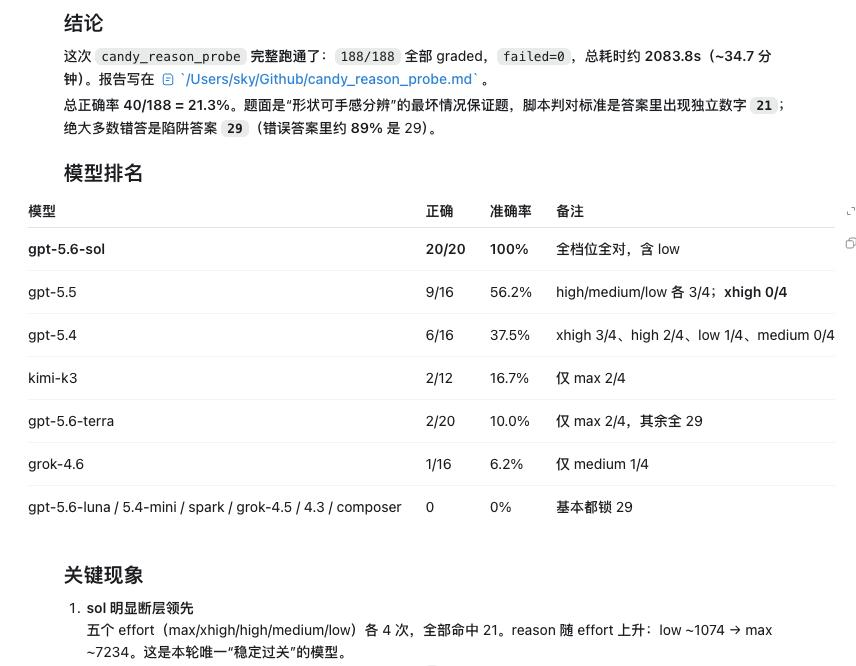

奶昔🥤
@realNyarime
GPT-4那会儿，我的编程能力还很青涩，写出来的代码常遭人嘲笑。
那时我便暗暗发誓：总有一天，我要成为真正的天才程序员。
时过境迁，我的编程水平突飞猛进。曾经困扰我几天的问题，如今片刻便能解决；以前想都不敢想的项目，现在也是信手拈来。
偶尔我也会怀疑：我今天的成就，是否借助了太多外力？
直到今天，我回顾来时的路——从GPT-4，到GPT-4o；
从Sonnet，到Opus；
再到如今的5.6 Sol Ultra Fast。
我换了一个又一个AI，编程实力却始终稳步上升。
那一刻，我终于释然了。
工具一直在换，强的却一直是我，原来我早就是天才程序员了
